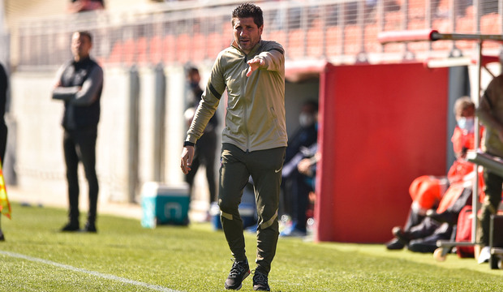

Gran trabajo del Atlético B sin el premio del triunfo al final por un gol en el 97 de Aitor en un córner. Giuliano adelantó a los nuestros, que tuvieron ocasiones para hacer el segundo pero vieron cómo se esfumó la victoria en el último suspiro del partido. El entrenador del Atlético B, Nacho Fernández, no tiene bajas para el partido frente al Navalcarnero, el aplazado por la nieve, que se disputará este miércoles a las 17:00 horas en el Mariano González. Para empezar, comentó que la derrota por 2-0 ante el Sanse “fue un resultado demasiado abultado por los méritos de los dos equipos”, pero ya piensa únicamente en el Navalcarnero. Señala que “éste partido es una final porque es un rival que está a 6 puntos de nosotros y nos podríamos poner a 3 en el caso de ganar y con el último partido de Liga contra ellos en nuestro campo. Por eso, para nosotros es muy importante hacer un buen partido y volver a las buenas sensaciones de semanas atrás”.
 El Atlético B juega una nueva final este domingo ante el Navalcarnero. Una victoria ante el Navalcarnero colocaría a los nuestros en el bloque intermedio, con lo que se evitaría luchar por no descender. El entrenador del Atlético B, Nacho Fernández, no tiene bajas para el partido frente al Navalcarnero, el aplazado por la nieve, que se disputará este miércoles a las 17:00 horas en el Mariano González. Para empezar, comentó que la derrota por 2-0 ante el Sanse “fue un resultado demasiado abultado por los méritos de los dos equipos”, pero ya piensa únicamente en el Navalcarnero. Señala que “éste partido es una final porque es un rival que está a 6 puntos de nosotros y nos podríamos poner a 3 en el caso de ganar y con el último partido de Liga contra ellos en nuestro campo. Por eso, para nosotros es muy importante hacer un buen partido y volver a las buenas sensaciones de semanas atrás”.